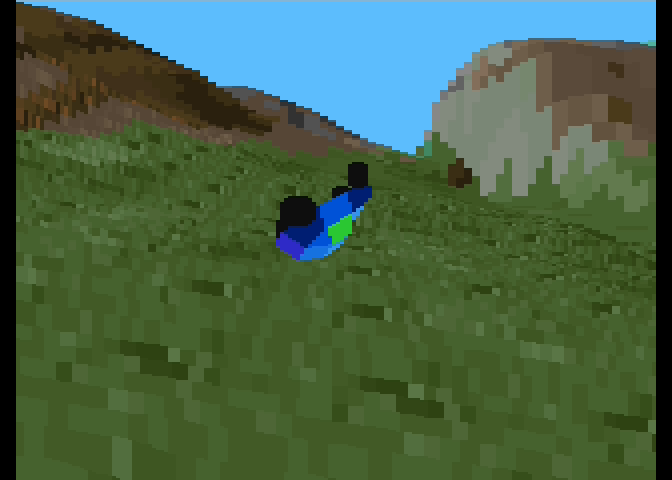
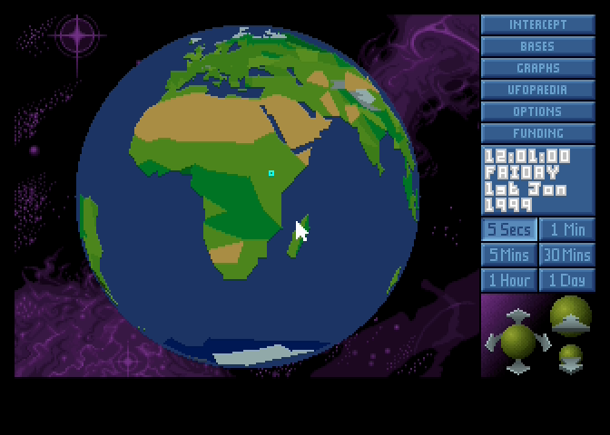

ATARI SNOOKER
Snooker for the Atari XL/XE — match, tournament and trick shots. 6502 assembly, needs VBXE.
Atari 800XE/XL — games, ports and tools. AI projects.
Snooker for the Atari XL/XE — match, tournament and trick shots. 6502 assembly, needs VBXE.
Port ATARI XE/XL Robbo for PMD-85

Little port of Terep 2 (a.k.a. Deformers) for ATARI XE/XL Needs VBXE and 65816.
DOOM for the Atari XL/XE — Requires VBXE and 65816.
Side-scrolling action game in the style of Doom 2D for the Atari XL/XE. 6502 assembly, VBXE graphics.

Port of UFO: Enemy Unknown (X-COM) — for Atari XL/XE. Needs VBXE
Port of the cinematic adventure Another World for the Atari XL/XE.
Raycasting FPS in the style of Wolfenstein 3D for the Atari XL/XE.
SpartaDOS X command for opening ATR disk images on a SIDE3 card: the image becomes drive D1: (read and write, at SD card speed) and the Atari boots from it.
Turbo tape loader for the QROS/EMO system on the Atari XL/XE. 6502 assembly — streams the tape through POKEY and parses the XEX format on the fly.
Tape image generator for the QROS/EMO turbo system — converts Atari XEX/COM/OBX executables into CAS and WAV tapes. Python, GUI and command line.
Web browser for the Atari XL/XE — surf the internet right on an 8-bit machine. Requires VBXE, FujiNet and an ST mouse (port 2).